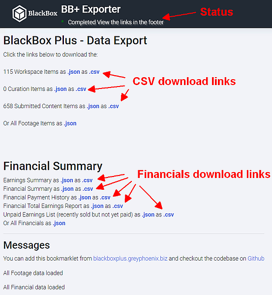

Created by Michael Kubler of Grey Phoenix Productions
Source code Available on Github
You need to drag and drop the bookmarks below into your browser toolbar. Then when you are on the portal.blackbox website you can click on a Bookmarklet to activate that feature.
Every time you refresh the page, you'll need to click the bookmarklet again to load it up.
Directions:
Drag the links below to your browser, go to portal.blackbox.global and when the page is loaded click the link and the extra functionality will be added.
Still coming:
BlackBox is a stock footage submission platform, community and more.
BlackBox is a creator community and platform that allows creators all over the world to connect, share the work, share the content and share the passive income..
The BlackBox Portal is the system used for dealing with submissions, keywording and more.
BlackBox Plus is a set of bookmarklets designed to add extra functionality to the BlackBox portal site.
A bookmarklet looks like a link, but actually executes javascript code in your browser. Note that you can't see the Bookmarklets in the Github README file. You have to view them at blackboxplus.greyphoenix.biz
The BB+ Data Export bookmarklet allows you to download the financial and stock footage data as CSV or JSON files. The CSV files can be opened up in a spreadsheet app, Google Docs, etc...
This means you can get a list of all your submitted footage with the keywords, descriptions and original filenames, plus other information. You can also get a list of all sales and more.
The bookmarklet uses your browser to call the BlackBox API similar to you going to the pages individually. But it gets all the paginated data and converts the results to CSV. Nothing is downloaded to your computer or sent anywhere until you click the links. The links themselves contain the data.
Because this makes multiple requests to the BlackBox API thus adding load to their servers and possibly making the system slower for others it's recommended you don't abuse this. e.g Don't use it 10x an hour.
Example output after completing processing:

This uses a Machine Learning system to grab frames of the video and attempt to detect things within that image.
This is only designed to reduce the burden on people doing keywording by automatically adding keywords for the obvious THINGS in the frames. Thus allowing curators to focus more on adding the emotional and movement keywords.
Currently it uses TensorFlow and the MobileNet Image Classification system. Unfortunately this tends to describe a lot of things as nematodes or lighters and candles.
Future enhancements include possibly using the Object Detection system called Coco SSD.
Another option, if there's interest is integrating with Google's Cloud Vision API ( or Amazon's) which can produce much better results, however it will do so at a cost and you'll need to create a Google project yourself.
Yet another option I'm interested in is allowing the BlackBox community to train our own model by using our video frames and final keywords as a basis for training a better machine learning model.
If your not sure what curating requires then check out Victoria Smith's Metadata Curator Skillshare course.
Example keywording:
https://cloud.google.com/vision/docs/drag-and-drop You can test out an example of the Google Vision API by visiting the Drag and Drop page and uploading an image.
The Vision API can detect and extract information about entities in an image, across a broad group of categories.
Labels can identify general objects, locations, activities, animal species, products, and more.
Face Detection with emotions Face Detection detects multiple faces within an image along with the associated key facial attributes such as emotional state or wearing headwear. Specific individual Facial Recognition is not supported.
Landmark Detection detects popular natural and man-made structures within an image.
The Image Properties feature detects general attributes of the image, such as dominant color.
The colours are converted to a name using the Name that Colour library.
API: https://vision.googleapis.com/v1/images:annotate
https://www.tensorflow.org/js TensorFlow image processing
https://cloud.google.com/vision/docs/labels - The Google Cloud label example. e.g Street, Snapshot, Town, Night, Alley
https://cloud.google.com/vision/docs/object-localizer - Object Localiser. e.g Bicycle, Picture frame, Tire, Door
This functionality isn't tested on older browsers and isn't going to work on a mobile phone (how do you click the Bookmarklet?).
The Analytics functionality isn't implemented yet, but will send a copy of the processed frames and keywords to a server for further machine learning, allowing creation of a custom TensorFlow model which provides more useful keywords without needing to use Google's Vision system. It learns from and provides benefits to people with the Analytics system enabled.
The bookmarklet looks like a bookmark but is a piece of Javascript code which runs when you click on it.
This repo is available publicly in order for other developers to be able to review the code for any issues, learn how it works and also suggest any changes.
Michael is a fellow stock footage film maker and also a skilled web developer with over 10 years experience.
Michael will do what he can to ensure the code works well and doesn't cause any issues. But accepts no liabilities for any issues caused by using this. The code has been developed independently from BlackBox itself. It's not been tested in every environment, although shouldn't cause any direct issues.
Copyright © 2020 Michael Kubler of Grey Phoenix Productions
Permission to use, copy, modify, and/or distribute this software for any purpose without fee is hereby granted, provided that the above copyright notice and this permission notice appear in all copies.
THE SOFTWARE IS PROVIDED "AS IS" AND THE AUTHOR DISCLAIMS ALL WARRANTIES WITH REGARD TO THIS SOFTWARE INCLUDING ALL IMPLIED WARRANTIES OF MERCHANTABILITY AND FITNESS. IN NO EVENT SHALL THE AUTHOR BE LIABLE FOR ANY SPECIAL, DIRECT, INDIRECT, OR CONSEQUENTIAL DAMAGES OR ANY DAMAGES WHATSOEVER RESULTING FROM LOSS OF USE, DATA OR PROFITS, WHETHER IN AN ACTION OF CONTRACT, NEGLIGENCE OR OTHER TORTIOUS ACTION, ARISING OUT OF OR IN CONNECTION WITH THE USE OR PERFORMANCE OF THIS SOFTWARE.
Ideally BlackBox will integrate some of these features into their website and you won't need to use this anymore. Alternatively BlackBox may choose to disable this functionality, in which case, talk to Pat about it.
The code provided here is available open source, especially for openness and transparency.